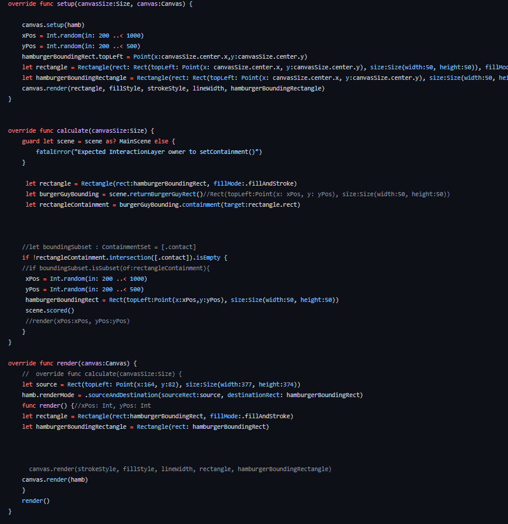

We wanted to use basics compentents of the popular game, Snake, and add some extra effects. Such as the added enemy that chases the sprite, and how the sprite does not grow bigger as it eats more hamburgers (apples!)
We saw coding for snake as a hard task, but we wanted a challenge, so we implemented components of snake, while adding extra aspects, such as the enemy to induce challenge in our project
Pictured Below is the segmented code we used to randomly generate our hamburgers. We set an absolute position for the first hamburger, then said that if sprite is within the containment rules we set of said hamburger, then new hamburger renders in a randomly generated point.
We struggled trying to program the enemy to copy movements of our sprite, as it has to register the sprites movements from the keys, and then copy those movements. That took the longest time, and possibly the was the hardest part of this project.
Overall, the project was a success, the presentation was presented beautifully. We did run into trouble towards the end when our pictures were not rendering, but that was only hiccup along the way
https://github.com/KarthikPeravali/BurgerRun